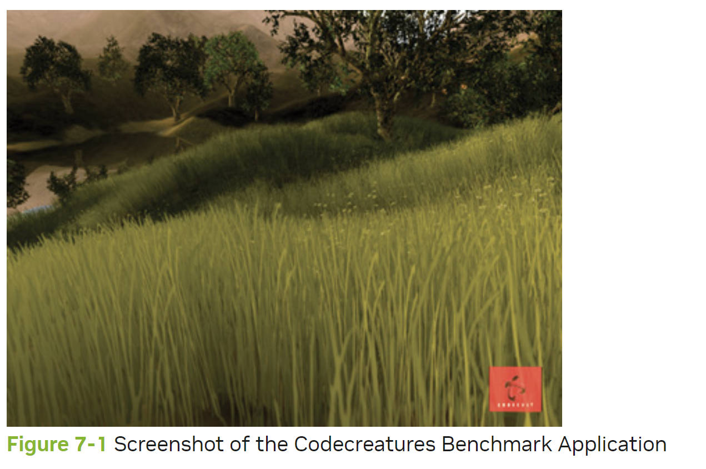
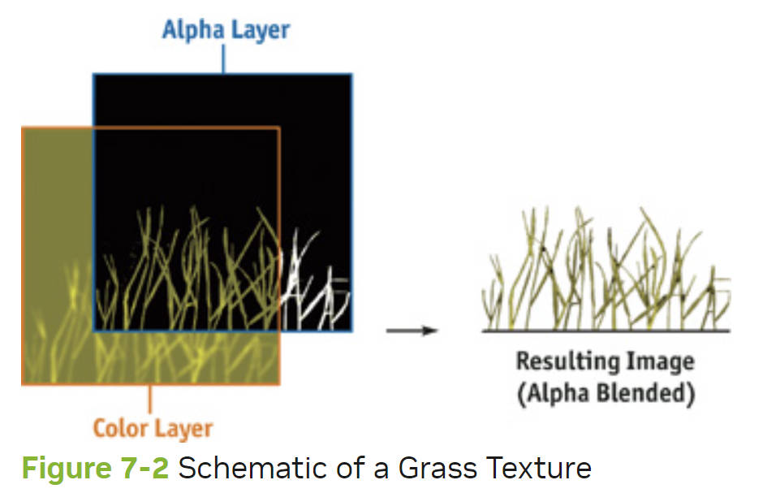
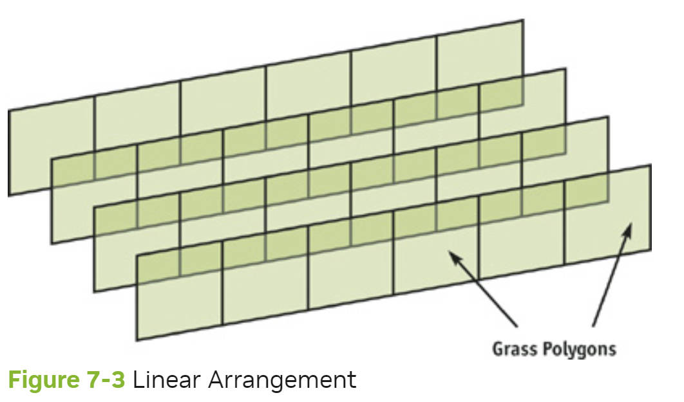
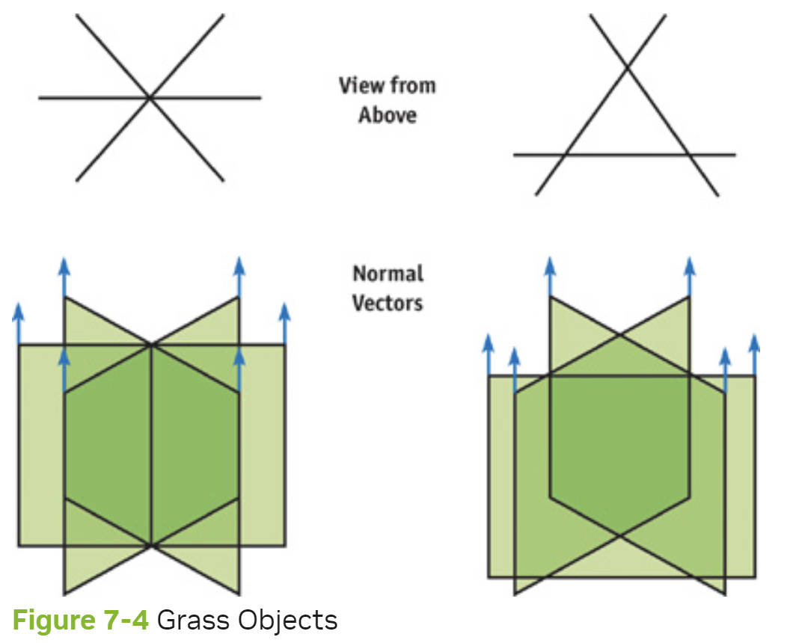
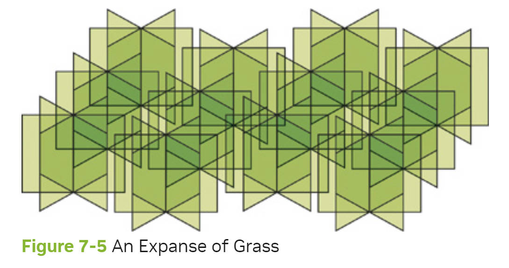
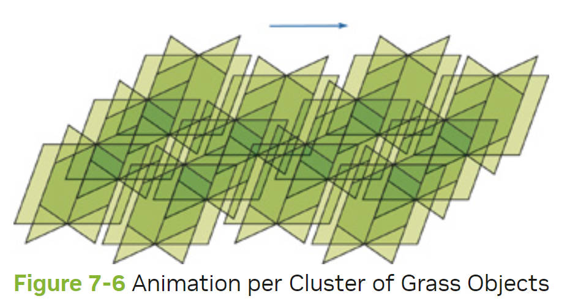
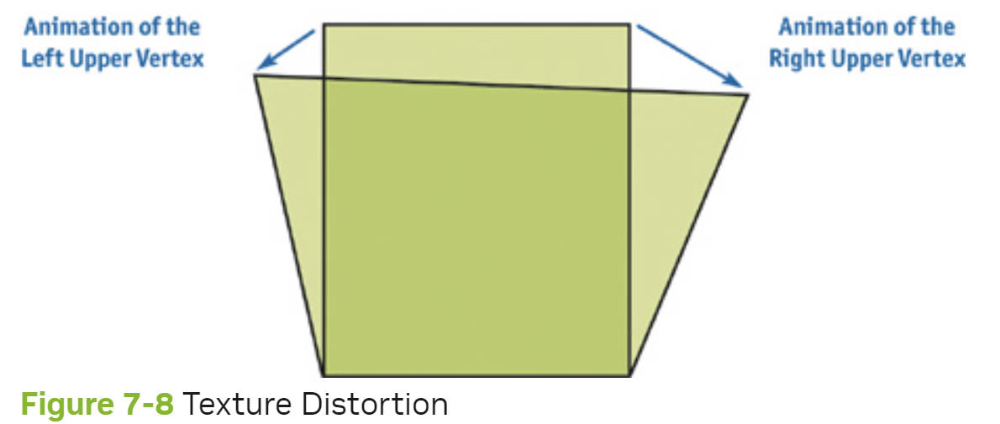
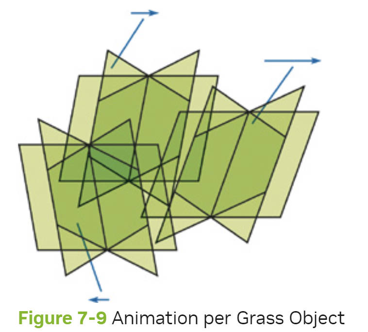
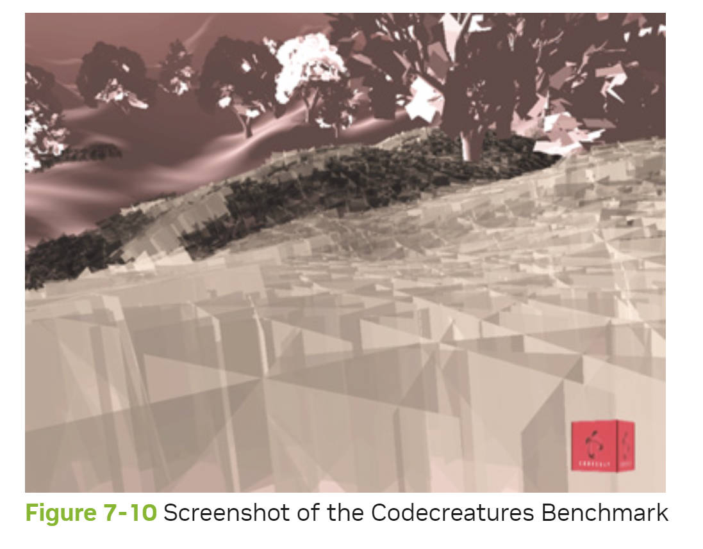

RenderingCountlessBladesOfWavingGrass
Table of Contents
RenderingCountlessBladesOfWavingGrass note.
<!– more –>
RenderingCountlessBladesOfWavingGrass
7.1 Introduction
为了以一种逼真的方式模拟出一个田园牧歌式的景象，除了细节非常丰富的树木灌木以及复杂的水和天空模拟外，我们还需要一个高质量的草地效果。我们必须能够将草地覆盖到大面积的地形上，而不会把 GPU 占用过多。草地应当看起来更像是自然生长的，并且可以在风中实时摆动。
过去，高质量的草地模拟在实时应用中都被认为是太复杂的。 Codecreatures Benchmark（由 Codecult 于 2002 年发布）却证明了这一悲观论断是不正确的（见图 7-1）。在本章中，我们将介绍一个灵活通用的草地模拟方法，基于这个 Benchmark（基准测试）中展示的草效果。另外，本书附带的材料中提供了一个特殊版本的 Codecreatures Benchmark 应用程序，它提供了交互式演示模式。

7.2 Overview
首先，我们应该意识到，详细建模每一片草叶并不是有意义的，因为更大的草地将需要太多的多边形。用当今的图形硬件，无法实时显示出一个数不清的多边形草地场景。
因此，我们必须建立一个简单而有用的替代方案，满足以下条件：
- 必须可以用少量多边形代表许多草叶。
- 从不同视线上，草看起来要密集。
在下一节中，我们将构建满足这些条件的草对象。
此外，草叶必须真实地动起来。在第 7.4 节中，我们将讨论三种不同的动画方法。
7.3 Preparation of the Grass Objects
正如我们刚才提到的，必须由少量的多边形来代表许多草叶。我们从解决这个问题开始。不管摄像机的位置和方向如何，外观应该像一片开阔的乡村。幸运的是，解决这个问题并不太困难。在第 7.3.1 节中，我们首先将几片草叶组合起来，并将它们显示在一个纹理中。但这还不够：一些使用该纹理的多边形必须以这样的方式组合，使单个多边形不被注意到（见第 7.3.2 节）。当观众四处移动时，我们通过混入或混出（blending them in or out）来增加或移除远处的草物体。这确保了完整的草地效果具有健壮的视觉质量。
7.3.1 Grass Texture
现在让我们看看如何为我们要解决的任务建立一个纹理。所需的纹理必须聚集多个草叶；否则，它将有大面积的透明区域。我们只需在透明的 alpha 通道中画出实心的草茎，就可以得到这个纹理。在颜色通道中，我们应该使用不同深浅的绿色和黄色，以便更好地区分单个叶片。我们可能想模拟条件好的和条件差的草叶，表示年龄或成熟度的差异，甚至想区分草叶的正面和背面。
图 7-2 中显示了一个草的纹理的具体例子。

7.3.2 Grass Objects
本节解释了如何结合一些多边形，用上一节建立的草地纹理进行贴图映射，使模拟的草地看起来很密集，并且不突出个别多边形。该技术还保证了单个多边形的不可见性。
因为用户可以在场景中自由浏览，类似于图 7-3 所示的构造不足以产生令人信服的效果。如果有人相对于多边形的方向垂直观看场景，草的多边形的线性排列的结构会立即被识别。此外，在这种情况下，草看起来会非常薄。像这样的排列方式只有在自动相机导航或无法到达的远处的草地上才可以考虑。

为了确保独立于当前视角的良好视觉质量，我们必须交叉草多边形。使用看起来像星星的配置被证明是非常值得的。图 7-4 展示了两种可行的 "草物体 "的变体，由三个相交的四边形组成。我们必须在渲染多边形时禁用背面剔除，以实现正反面的可见性。为了获得适当的光照，我们应该将所有顶点的法线向量与多边形的垂直边缘平行。这就保证了位于斜坡上的所有草物体的正确照明，不会因为地形的亮度而产生差异。

如果我们像图 7-5 所示，在一个大的区域内将这些草对象放置的很近，在运行时将它们从后往前排序，使用 alpha 混合，并在绘制调用中启用 z-testing/writing，那么就会得到一个自然生长的茂密草地的效果。

7.4 Animation
继续下一步，我们要对一个完整的草地进行逼真的动画处理，用图 7-5 中的 "草地对象 "来构建草地。本节介绍了三种不同的动画变体。每一种都有其优点和缺点。第 7.4.1 节介绍了我们的动画方法的总体思路。在第 7.4.2 节中，对站在一起的几个草物体的集群以同样的方式进行动画。在第 7.4.3 节中，每个顶点都有自己的平移矢量。最后，在第 7.4.4 节中，我们试图找到黄金分割点：为每个草物体提供不同的动画。
7.4.1 The General Idea
为了实现高度真实的动画，我们将使用基于三角函数的计算，特别是正弦和余弦。这个计算应该考虑被移动的位置（无论是顶点还是物体或集群的中心）和当前的时间。另外，盛行风的方向和强度也将是影响因素。我们的每一项技术都只移动草物体的上部顶点。在顶点着色器中，通过检查纹理坐标很容易区分这些上部顶点和下部顶点。所有的上部顶点都应该有相同的草纹理 v 坐标：比如零，或者接近零的值。如下面代码所示，在这三种技术中，顶点着色器代码中的框架都是一样的；只有纯动画部分不同。动画代码可以在下面的章节中找到。
// Equal Cg / HLSL framework in the vertex shaders // for Sections 7.4.2, 7.4.3, and 7.4.4 // struct VS_INPUT { float3 vPosition : POSITION; float3 vNormal : NORMAL; float2 TexCoords : TEXCOORD0; // This member is needed in Section 7.4.4 float3 vObjectPosition : TEXCOORD1; }; struct VS_OUTPUT { float4 vPosition : POSITION; float4 vDiffuse : COLOR; float2 TexCoords : TEXCOORD0; }; struct VS_TEMP { float3 vPosition; float3 vNormal; }; float4x4 mWorldViewProjMatrix; float4 vLight; float fObjectHeight; VS_OUTPUT main(const VS_INPUT v) { VS_OUTPUT out; VS_TEMP temp; // Animate the upper vertices and normals only if (v.TexCoords.y <= 0.1) { // Or: if(v.TexCoords.y >= 0.9) // animation (to world space) // Insert the code for 7.4.2, 7.4.3, or 7.4.4 . . . // <- Code for our different animation methods } // Output stuff out.vPosition = mul(float4(temp.vPosition, 1), mWorldViewProjMatrix); out.vDiffuse = dot(vLight, temp.vNormal); out.TexCoords = v.TexCoords; return out; }
7.4.2 Animation per Cluster of Grass Objects
下面的方法被用于 Codecreatures Benchmark，它产生了一种具有不断改变强度和方向的阵风的逼真外观。在这里，多边形上部顶点的移动对于靠近的一组草物体来说是相同的。为了产生一个自然的动画，我们应该选择一个不太大的集群大小。见图 7-6。

动画的平移矢量是由 CPU 计算的，并作为一个常量参数交给顶点着色器。在 CPU 上使用一种更昂贵的算法，可以让我们实现非常复杂的风的模拟。因为我们为每个草丛对象提供了自己的平移矢量，所以我们必须为每个草丛改变这个常量参数。因此，我们必须经常中断一个完整草地的渲染，并为每个集群使用单独的绘制调用。
Pros
- 复杂的动画计算是通过基于 CPU 的算法进行的
- 由于多边形上部顶点的距离是恒定的，所以没有变形
Cons
- 要显示一个完整的草地，需要多次的绘制调用
- 由于一个对象集群的所有顶点的动画是相同的，集群可能被明显观察到
Algorithm
- 在 CPU 上，使用集群中心的位置计算下一个集群的当前平移向量
- 将平移矢量设置为顶点着色器的常量。
- 为集群执行一个绘制调用。
- 在顶点着色器中，将平移矢量添加到上部顶点的位置。参见下面代码。
float3 vClusterTranslation; // Calculated on CPU VS_OUTPUT main(const VS_INPUT v) { . . . // animation (to world space) // Here comes the code for 7.4.2 temp.vPosition = v.vPosition + vClusterTranslation; temp.vNormal = normalize(v.vNormal * fObjectHeight + vClusterTranslation); ... }
7.4.3 Animation per Vertex
第 7.4.2 节中讨论的方法的主要问题之一是性能差，因为有大量的绘制调用，而这些调用只能单独渲染少量的多边形。如果我们能够通过使用更少的绘制调用来渲染一个大面积的草地，那就更好了。然而，我们必须将完整的动画计算重新放到顶点着色器中，以便能够相对于它的位置分别移动每个顶点。见图 7-7。

因为每个顶点的平移是单独计算的，所以草的多边形上部顶点之间的边的长度不再是恒定的，如图 7-8 所示。由于每片草的长度和厚度不恒定，可能会出现明显的变形(distortions)，但通常这些 artifacts 不会很明显。

此外，整体效果可能比之前的方法看起来更不自然。因为附近区域的所有顶点的平移都是非常相似的，所以导致了局部混乱的缺失和非常同质化的动画。我们能够通过在顶点着色器中使用一个伪随机函数来消除这个缺点，以达到更多的变化结果。
Pros
- 只需要几个绘图调用，甚至只需要一个，就可以显示一个完整的草地
- 在顶点着色器中改变顶点的位置，可以使风的波纹有连续性
- 这些集群是无法区分的
Cons
- 由于多边形上部顶点的距离不定，会出现变形
- 由于缺乏局部的混乱，动画可能会出现同质化
- 动画计算的复杂性是有限的
Algorithm
1 为顶点着色器设置常量，如时间戳和风的基本强度和方向。
2 为整个草地或大面积的草地执行一次绘制调用。
3 使用顶点着色器来计算基于顶点位置的动画。
float fTimeStamp; float3 vWindDirection; float fWindStrength; VS_OUTPUT main(const VS_INPUT v) { . . . // animation (to world space) // Here comes the code for 7.4.3 float3 vVertexTranslation = CalcTranslation(v.vPosition, fTimeStamp, vWindDirection, fWindStrength); temp.vPosition = v.vPosition + vVertexTranslation; temp.vNormal = normalize(v.vNormal * fObjectHeight + vVertexTranslation); . . . }
7.4.4 Animation per Grass Object
为了增加基于第 7.4.2 和 7.4.3 节中介绍的方法的动画的视觉复杂性，我们将不扭曲的草地纹理和低数量的绘制调用与局部混沌（局部混乱、局部变化）相结合，从而获得这两种方法的优点。我们能够结合这些方法是因为我们不再根据每个顶点的位置来计算其动画，而是根据草对象的中心位置来计算–每个对象由三个相交的四边形组成（见 7.3.2 节）。因为相邻的草对象现在有不同的动画，我们可以表现出所需的局部混乱，如图 7-9 所示。此外，每个草对象的恒定动画还可以防止水平纹理变形（distortions）。

为了实现这一点，每个顶点必须知道其对应的草对象的中心位置，可以是相对于顶点的位置，也可以是在世界中的绝对位置。这个所需的草对象位置向量必须是顶点格式的（也就是存储在纹理坐标中），因为顶点着色器必须读取这个值。
Pros
- 只需要几个绘图调用，甚至只需要一个，就可以显示一个完整的草地
- 由于多边形上部顶点的距离是恒定的，所以没有失真
- 局部差异创造了一个更自然的外观
Cons
- 在顶点中需要存储额外的数据，因为每个顶点也包含其草地对象的中心位置
- 动画计算的复杂性是有限的，以尽量减少着色器的成本
Algorithm
1 为顶点着色器设置常量，如时间戳和风的基本强度和方向。
2 为整个草地或大面积的草地执行一次绘制调用。
3 在顶点着色器中，根据草地对象的中心位置来计算动画。
float fTimeStamp; float3 vWindDirection; float fWindStrength; VS_OUTPUT main(const VS_INPUT v) { . . . // animation (to world space) // Here comes the code for 7.4.4 float3 vObjectTranslation = CalcTranslation(v.vObjectPosition, fTimeStamp, vWindDirection, fWindStrength); temp.vPosition = v.vPosition + vObjectTranslation; temp.vNormal = normalize(v.vNormal * fObjectHeight + vObjectTranslation); . . . }
7.5 Conclusion
我们已经成功地建立了一个真实的草地模拟，满足了三个最重要的要求。
- 广泛的实用性，而不过度的性能压力
- 从所有视线看都是自然的外观
- 基于当时风况的动画（有三种不同的变体）
如图 7-10 所示，用于 Codecreatures Benchmark 的特殊版本的应用程序提供了一个交互式演示模式，可以在本书的 CD 或网站上找到。在该应用程序中，你可以使用一个自由的相机进行导航，并切换渲染状态。我们鼓励你查看这个应用程序，看一看背后的实现。
